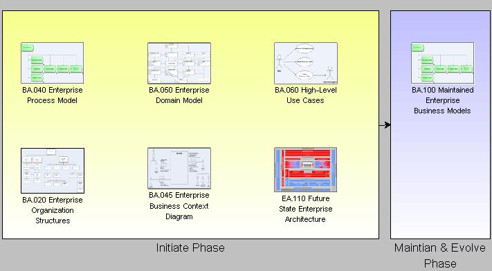

OUM |
Envision - Example Artifacts |
||
Method Navigation |
Current Page Navigation |
||
|
|
||||||||
This view provides a series of example artifacts and models from OUM’s Envision Focus Area.

| ID | Task | Template | Example |
|---|---|---|---|
Initiiate Phase |
|||
BA.020 |
Document Enterprise Organization Structures | Enterprise Organization Structures | Enterprise Organization Structures (Visio) |
BA.040 |
Create Enterprise Function or Process Model | Enterprise Process Model | Enterprise Process Model |
BA.045 |
Develop Enterprise Business Context Diagram | Enterprise Business Context Diagram-PowerPoint Enterprise Business Context Diagram-Visio Template and Stencil |
Enterprise Business Context Diagram (Visio) |
BA.050 |
Develop Enterprise Domain Model (Business Entities) | Enterprise Domain Model | Enterprise Domain Model |
BA.060 |
Perform High-Level Use Case Discovery | High-Level Use Cases | High-Level Use Case (Visio) |
EA.110 |
Develop Future State Enterprise Architecture | Refer to the Task Overview for guidance. | Future State Enterprise Architecture |
Maintain and Evolve Phase |
|||
BA.100 |
BA.100 Maintain Enterprise Business Models | Refer to the Task Overview for guidance. | Maintained Enterprise Business Models |

Copyright © 2006, 2016, Oracle and/or its affiliates. All rights reserved.